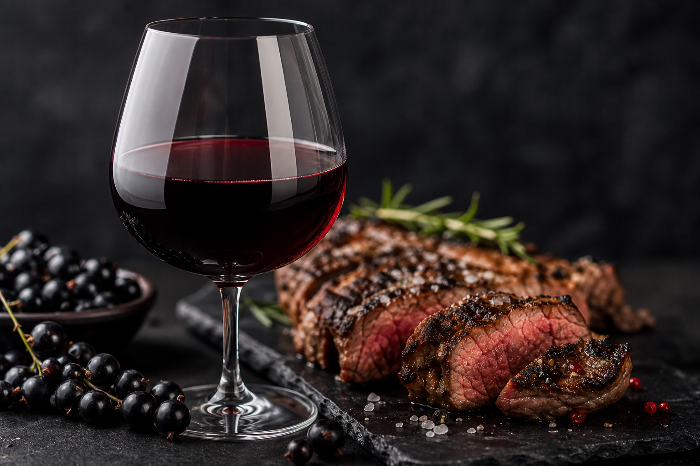
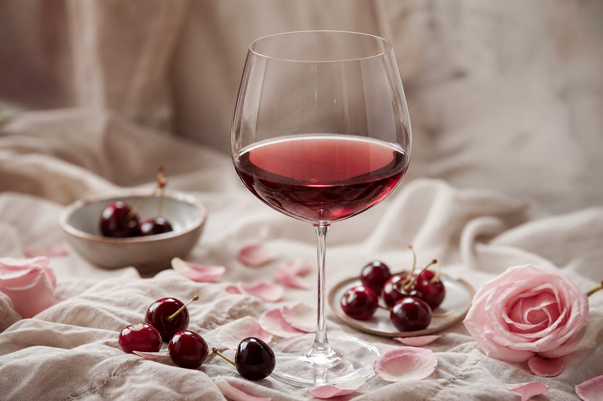

「ブランドだから高い」——これは半分正しく、半分だけではありません。ワインの値段を押し上げるのは、ぶどうの重量や瓶のコストだけではなく、名前・産地・格付け・飲む場面が一体となって生まれる「支払意思」です。
工場で均一に作られる飲料と違い、ワインには誰が、どこで、いつ、どう造ったかが価格に直結します。シャトーの歴史、ソムリエの評価、レストランのペアリング——これらはすべて、品質の「証拠」であり、同時にブランドという増幅器を通して価格に変換されていきます。
顧客が払うのは、機能だけではなく信頼・体験・選んだ自分自身のイメージです。ブランドとは装飾ではなく、価値を言語化し、比較できない領域をつくる装置だと捉え直すことが大切です。

グラスに注がれた一口は、実は無数の変数の結果です。天候が少し違えれば酸味が変わり、収穫が一日遅れれば糖度が変わる——ワイン造りは、標準化が極めて難しい職人仕事でもあります。
だからこそ、同じワイナリーでも年によって味が違うのは当然のこと。複雑さはコストであり、同時に「他では再現できない」理由でもあります。経営においても、高付加価値の裏には「変数が多く、均一化しにくいプロセス」があることが多い——その複雑さを隠さず、何が違うのかを伝えることで、初めてプレミアムは納得されるのです。
同じ畑、同じ品種、同じ造り手でも、2018年と2019年では別物のワインになります。これは品質のブレではなく、ワインの本質的な魅力です。
テロワール（その土地） × 気候・季節（その年） × 収穫（最適なタイミング）
＝ その年だけの「作品」
良ヴィンテージ（好年）と並ぶ価格には、味の優秀さに加え、「もう二度と同じ条件では造れない」という時間の制約が織り込まれています。限定版、復刻版、特定の年代ラベル——いずれも量が限られ、再生産できないからこそ、価格に「稀缺」のプレミアムが上乗せされます。
いつ買っても同じ味・同じ体験
その年の天候と収穫が瓶に封印された「一度きり」
経営への転用：稀缺性とタイムスタンプは、煽りではなく正当な差別化になり得ます。「今この条件でしか提供できない」——それを誠実に伝えられる事業は、価格競争から一歩抜け出せます。
高級ワインが顧客に伝えているのは、スペック表ではありません。顧客に感じてほしいのは次の三つです。
| 大衆商品の売り方 | 独自性の売り方 |
|---|---|
| 規格・価格・量で比較される | 物語・年份・体験で選ばれる |
| どれを選んでも大差ない | この一本だから選ぶ |
| 安さが最大の武器 | 価値の言語化が最大の武器 |
名庄のロジックはシンプルです——同じカテゴリの中で、顧客に「このカテゴリ」ではなく「この一本」にお金を払わせる。規格勝負から抜け出すには、商品を「モノ」ではなく選ばれた体験として設計する必要があります。

介護、貿易、資産運用——どの事業も、いずれ同質化の圧力に直面します。ワインから学べるのは、高値を支える三本柱です。
接客も、提案も、パートナーとの関係づくりも同じです。お客様に「これは誰にでも同じように売っている商品だ」と感じさせるのではなく、「あなたのために、今、この条件で用意した選択」だと感じてもらう——その設計こそが、プレミアムの本質に近い姿勢です。
ワインが高い理由を一言でまとめれば——ブランドが価値を増幅し、複雑な生産が価値を支え、ヴィンテージが価値を稀缺にするからです。
経営の本質のひとつは、顧客に「誰が買っても同じもの」を売るのではなく、語れる・記憶に残る・代替しにくい選択を届けること。ニューライフ・デベロップメント・グループも、日々の事業の中で、その姿勢を大切にしていきたいと改めて感じる内容でした。